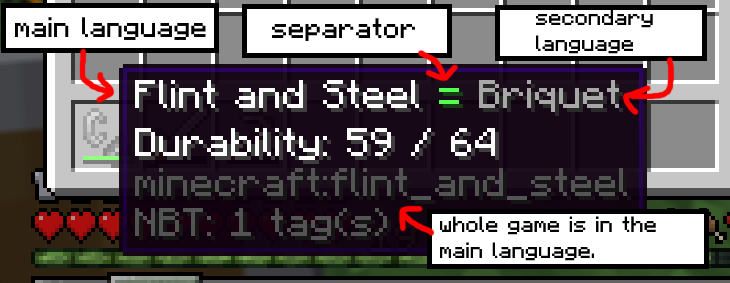
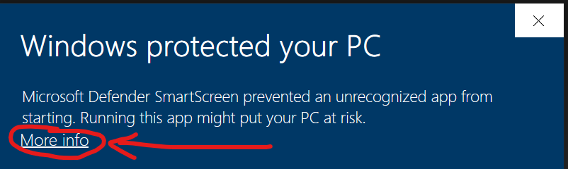
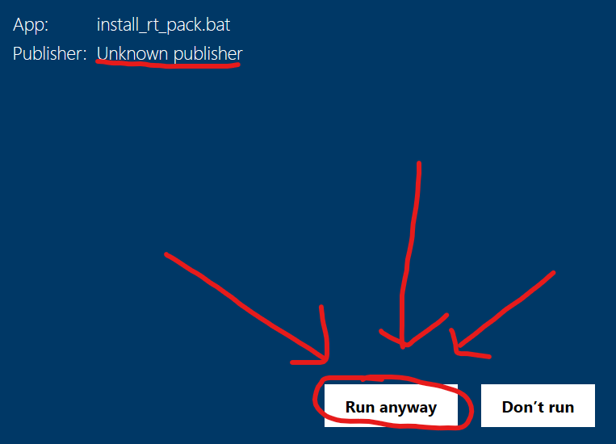

Version:
Main language:
Secondary language:
Color of main language:
Color of secondary language:
Separator between languages:
Color:
Resourcepack settings:
0/42 0/42
BE SURE TO DOWNLOAD BOTH LANG FILE AND INSTALLER TO THE SAME FOLDER!
How to use:
IF YOU ARE SWITCHING TO ANOTHER VERSION, BE SURE TO DISABLE THE RESOURCEPACK, OR SOME SERVER MAY KICK YOU!

Select the languages you want to combine.
Select the main language, whole game will be in this language.
Select the secondary language, all items will be translated into this language.
Select the separator between languages.
Select the color of main language.
Select the color of secondary language.
Select the color of separator.
Select the name of the resource pack, the name of the language and the name of the region.
Enter the description of the resource pack, this will be displayed in Minecraft settings.
Click on the download button. ENABLE AUTOMATIC DOWNLOADING FOR THIS SITE IN YOUR BROWSER!
Download the resource pack and the installer. You can download it to any folder in your PC, but be sure to download both files into the same folder.
Open the installer, windows will probably warn you about that i am not trusted source, but it's safe to continue. You can view code of this file and you can see that there is nothing dangerous, just moving resource pack files 😇.

Open Minecraft, go to the settings, resource packs and you will see your pack on the left. Enable it.
Now, go to the language settings, find your generated language and select it.I don't know why, but your custom language will NOT be sorted by alphabet like other languages, so you have to be a little detective.
Done! Now, you can play and learn in the same time 🎉